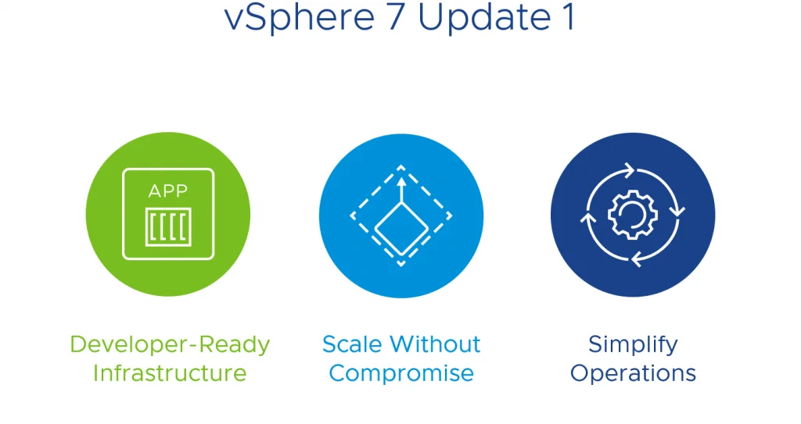

请访问原文链接：VMware vSphere 7 Update 1 下载 查看最新版。原创作品，转载请保留出处。
作者主页：sysin.org
2020年 10月 6日，VMware 宣布正式发布 vSphere 7 Update 1：Announcing General Availability of vSphere 7 Update 1

产品概述
统一管理容器和虚拟机
在支持基于容器的应用开发的现代 vSphere 基础架构上，像管理传统应用和虚拟机一样轻松地管理复杂的现代应用。采用原生 Kubernetes 重新构建，您现在可以对 vSphere 上运行的 7,000 多万个工作负载实现现代化改造 (sysin)。现在，您可以使用 vSphere with Tanzu 在现有基础架构上与现有的企业级应用一起运行现代的容器化应用。
-
交付 AI 和开发人员就绪型基础架构
提高 AI 和 Kubernetes 应用的效率、规模和安全性。整合 GPU 以交付 AI/ML 基础架构。在不到一个小时的时间内部署企业级Kubernetes 集群。
-
轻松扩展但不影响性能
扩展基础架构，使每个集群支持的主机数量增加高达 50%。满足高性能应用、巨型虚拟机和内存密集型数据库（包括 SAP HANA、EPIC 等）的需求。
-
简化运维
使软件升级、修补和固件更新的维护变得更加简单，干扰更少，从而简化生命周期管理。在单一界面中管理本地部署和远程部署。
-
提升基础架构和数据安全性
利用内置的原生安全性，而非附加的事后补救针对性解决方案保护混合云基础架构。阻止恶意软件和勒索软件入侵。
应用场景
-
人工智能和机器学习
为高级 AI/ML 服务和工作负载提供企业级数据中心、云计算和边缘基础架构。
-
远程办公室和分支机构 (ROBO)
只需很少甚至不需要本地 IT 人员，就能对远程办公室和分支机构进行管理 (sysin)。最大限度降低主机配置偏差以及增强法规遵从可见性，实现多个站点间服务器的快速置备。
-
大数据和现代数据应用
通过统一，经济高效的故障转移保护，简化大数据基础架构的管理，并充分减少停机。此外，还可轻松组织、优先安排和共享数据中心资源，以便做出明智的决策。
-
高性能计算 (HPC)
通过按需式基础架构、集中管理、数据监管和敏感数据控制，更快地获得见解。vSphere 的横向扩展版本是使用高性能计算工作负载自定义构建的。
比较各个版本
-
vSphere Standard
- 服务器整合
- 业务连续性
-
vSphere Enterprise Plus
- 资源管理
- 简化生命周期管理
- 原生安全性
- 增强应用的恢复能力和性能
新增功能
-
在以下服务器中，ESXi 7.0 Update 1 支持 vSphere 快速引导：
- HPE ProLiant BL460c Gen9
- HPE ProLiant DL325 Gen10 Plus
- HPE ProLiant DL360 Gen9
- HPE ProLiant DL385 Gen10 Plus
- HPE ProLiant XL225n Gen10 Plus
- HPE Synergy 480 Gen9
-
增强了适用于 vSAN 环境的 vSphere Lifecycle Manager 硬件兼容性预检查：ESXi 7.0 Update 1 增加了 vSphere Lifecycle Manager 硬件兼容性预检查。预检查可在某些更改事件（例如，修改集群所需映像或在 vSAN 环境中添加新的 ESXi 主机）后自动触发 (sysin)。此外，硬件兼容性框架会根据需要按预定义时间间隔自动轮询硬件兼容性列表数据库以查找触发预检查的更改。
-
增加了集群上 vSphere Lifecycle Manager 并发操作的数量：在 ESXi 7.0 Update 1 中，如果在数据中心级别启动修复，可以并行运行修复的集群数从 15 个增加到了 64 个。
-
vSphere Lifecycle Manager 支持在可用区之间协调更新：在 ESXi 7.0 Update 1 中，为了防止操作重叠，vSphere Lifecycle Manager 将按顺序更新 vSAN 集群中的故障域。每个故障域中的 ESXi 主机仍以滚动方式进行更新。对于 vSAN 延伸集群，第一个故障域始终是首选站点。
-
扩展了 VMware vSphere Update Manager Download Service (UMDS) 支持的 Red Hat Enterprise Linux 和 Ubuntu 版本的列表：ESXi 7.0 Update 1 添加了 UMDS 支持的全新 Red Hat Enterprise Linux 和 Ubuntu 版本。有关支持版本的完整列表，请参见支持安装 UMDS 的基于 Linux 的操作系统。
-
改进了对 VMware Tools 时间同步的控制：在 ESXi 7.0 Update 1 中，可以从 vSphere Client 中选择 VMware Tools 时间同步模式，而不是使用命令提示符。导航到虚拟机选项 > VMware Tools > 与主机同步时间时，可以选择在启动和恢复时同步 (建议) 或定期同步时间，或者，如果未选择任何选项，可以禁止同步。
-
增加了对 Multi-Processor Fault Tolerance (SMP-FT) 最高配置的支持：在 ESXi 7.0 Update 1 中，可以根据自己的工作负载和容量规划在 ESXi 主机或集群中配置更多 SMP-FT 虚拟机和更多 SMP-FT vCPU（总数）。
-
虚拟硬件版本 18
：ESXi Update 7.0 Update 1 引入了虚拟硬件版本 18，可支持资源最高配置较高的虚拟机，并支持：
- Secure Encrypted Virtualization - Encrypted State (SEV-ES)
- 虚拟远程直接内存访问 (vRDMA) 原生端点
- EVC 图形模式 (vSGA)。
-
增加了资源最高配置以增强虚拟机并提高性能：
- 在 ESXi 7.0 Update 1 中，可以创建虚拟 CPU 多三倍、内存多四倍的虚拟机，以使比裸机具有更大内存和 CPU 占用空间的应用程序能够以近乎线性的方式进行扩展 (sysin)。虚拟机资源最高配置如下所示：vCPU 从 256 个最多增加到 768 个，虚拟 RAM 从 6 TB 最多增加到 24 TB。但最佳做法仍是不要超额分配内存。只有硬件版本为 18 且操作系统支持此类大型配置的虚拟机才能设置这些资源最高配置。
- ESXi 中的性能增强支持更大规模的虚拟机，包括物理地址扩大、地址空间优化、改进对客户机虚拟机的 NUMA 感知以及更具可扩展性的同步技术。vSphere vMotion 也进行了优化，可与较高的虚拟机配置配合使用。
- 具有 AMD 处理器的 ESXi 主机可以支持 vCPU 多两倍 (256)、RAM 多达 8 TB 的虚拟机。
- 对于内存模式和应用直接模式，持久性内存 (PMEM) 支持翻倍，从 6 TB 增加到 12 TB。

文件说明
提供 vCenter Server，ESXi 标准镜像，DellEMC、HPE 和 Lenovo 定制版镜像，以及升级包下载。
| Name | File | File size | Checksum |
|---|---|---|---|
| VMware vCenter Server Appliance | VMware-VCSA-all-7.0.1-16860138.iso | 7.88 GB | SHA256SUM: 840fd20e2136275518921f91f20fca20f3b7d47734a21d5463672417e42a0587 |
| VMware vCenter Server Appliance Update Bundle | VMware-vCenter-Server-Appliance-7.0.1.00000-16860138-updaterepo.zip | 5.77 GB | SHA256SUM: e1fb8ea059d279a1b28318f7c5340e4b46af9c8702d52f57627518c6f70c4335 |
| VMware vSphere Hypervisor (ESXi ISO) image | VMware-VMvisor-Installer-7.0U1-16850804.x86_64.iso | 357.07 MB | SHA256SUM: 5c72f1b26e24e2c6195846f555a2f767a3c6e8394ba35769b5be25e51e84ba80 |
| VMware vSphere Hypervisor (ESXi) Offline Bundle | VMware-ESXi-7.0U1-16850804-depot.zip | 343.91 MB | SHA256SUM: b566bc32b74f640b2fa6a21e39b638d5e776fdb463151a7d47b50f5e097964dd |
| DellEMC Custom Image for ESXi 7.0 U1 Install CD | VMware-VMvisor-Installer-7.0.0.update01-16850804.x86_64-DellEMC_Customized-A00.iso | 359.62 MB | SHA256SUM: 7138e406f1452534b2a1ba5e2847e76bfab36bea025399452e0f7de9e618cdc4 |
| DellEMC Custom Image for ESXi 7.0 U1 Offline Bundle | VMware-VMvisor-Installer-7.0.0.update01-16850804.x86_64-DellEMC_Customized-A00.zip | 352.49 MB | SHA256SUM: fe22e55c743b3f488496fd8311fb975160532aa88aec9e50f7c972652b89406e |
| DellEMC Addon for ESXi 7.0 U1 | DellEMC_Addon_7.0.1_A00.zip | 8.57 MB | SHA256SUM: 5c942bf03a8811f60e46bd4e503a3045c18d4e2e26ad2954b4ad469c4e54ebf7 |
| HPE Custom Image for ESXi 7.0 U1 Install CD | VMware-ESXi-7.0.1-16850804-HPE-701.0.0.10.6.0.40-Oct2020.iso | 404.61 MB | SHA256SUM: 4dc47a15aefd1bcf2f461ea468de4192edd3768609ada285a84b23019076fea7 |
| HPE Custom Image for ESXi 7.0 U1 Offline Bundle | VMware-ESXi-7.0.1-16850804-HPE-701.0.0.10.6.0.40-Oct2020-depot.zip | 396.79 MB | SHA256SUM: e3e7ad56b4197c36f22f7dbfb0dc767744e1c6860b22c8c2a9c9bb53651b7c4d |
| HPE Addon for ESXi 7.0 U1 | HPE-701.0.0.10.6.0.40-Oct2020-Addon-depot.zip | 52.87 MB | SHA1SUM: a0c36980e87a15acf8662a08a660914f95589f74 |
| Lenovo Custom Image for ESXi 7.0 U1 Install CD | VMware-ESXi-7.0.1.-16850804-LNV-20200917.iso | 359.52 MB | SHA256SUM: 11ae64079cf8a43032005c2f8c1ca9f66f580ffcad5407c424c05a93dd21b75b |
| Lenovo Custom Image for ESXi 7.0 U1 Offline Bundle | VMware-ESXi-7.0.1.-16850804-LNV-20200917.zip | 352.43 MB | SHA256SUM: 3742bce6bb9420256d81e1ed737128718fae0ae260fb03ea565acc5bdc1e09eb |
| Lenovo Addon for ESXi 7.0 U1 | lnv-esx-7.0.1-custom-20200917_addon.zip | 8.54 MB | SHA256SUM: fbda38036f387727c677dca696503b6b2c33f967520986b3808d86af3a0f1c0e |
下载地址
官方下载链接：Go download vSphere 7 Update 1!（需要登录和许可）
百度网盘链接：https://pan.baidu.com/s/1TJAKOz0AWuLyCfNpaV_KVQ 提取码：eoto
版本已更新：VMware vSphere 7 Update 2 下载
本站定制镜像：
- VMware ESXi 7.0U3r macOS Unlocker & OEM BIOS 2.7 标准版和厂商定制版
- VMware ESXi 7.0U3r macOS Unlocker & OEM BIOS 2.7 集成网卡驱动和 NVMe 驱动 (集成驱动版)

文章用于推荐和分享优秀的软件产品及其相关技术，所有软件默认提供官方原版（免费版或试用版），免费分享。对于部分产品笔者加入了自己的理解和分析，方便学习和研究使用。任何内容若侵犯了您的版权，请联系作者删除。如果您喜欢这篇文章或者觉得它对您有所帮助，或者发现有不当之处，欢迎您发表评论，也欢迎您分享这个网站，或者赞赏一下作者，谢谢！
 支付宝赞赏
支付宝赞赏
 微信赞赏
微信赞赏
赞赏一下